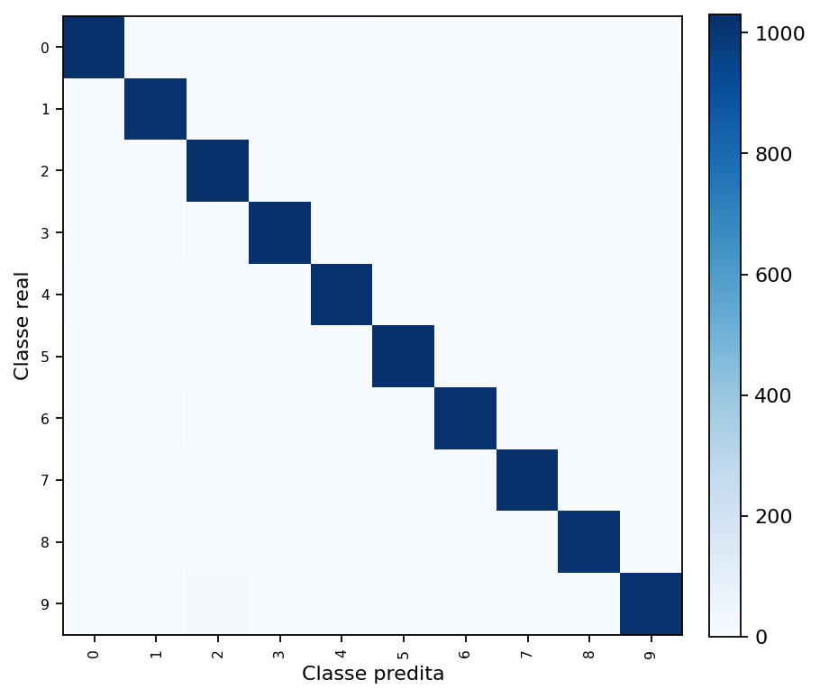
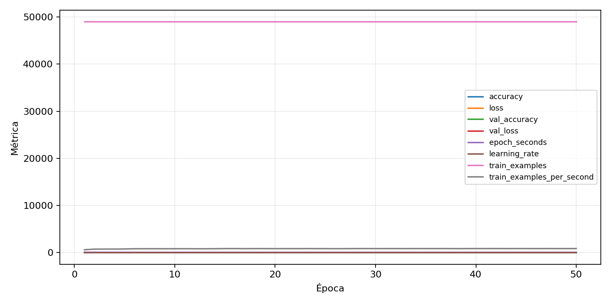

| n_samples | 10500 |
|---|---|
| loss | 0.13654394447803497 |
| accuracy | 0.9743809523809523 |
| balanced_accuracy | 0.9743809523809525 |
| macro_f1 | 0.9744387481660762 |


| Índice | Classe | Suporte | Precisão | Recall | F1 |
|---|---|---|---|---|---|
| 0 | 0 | 1050 | 0.9846449136276392 | 0.9771428571428571 | 0.9808795411089866 |
| 1 | 1 | 1050 | 0.9807877041306436 | 0.9723809523809523 | 0.9765662362505978 |
| 2 | 2 | 1050 | 0.9344858962693358 | 0.9780952380952381 | 0.9557933922754769 |
| 3 | 3 | 1050 | 0.9744801512287334 | 0.981904761904762 | 0.9781783681214421 |
| 4 | 4 | 1050 | 0.9714013346043852 | 0.9704761904761905 | 0.9709385421629347 |
| 5 | 5 | 1050 | 0.9846005774783445 | 0.9742857142857143 | 0.9794159885112493 |
| 6 | 6 | 1050 | 0.9614299153339605 | 0.9733333333333334 | 0.9673450070989116 |
| 7 | 7 | 1050 | 0.9846596356663471 | 0.9780952380952381 | 0.9813664596273292 |
| 8 | 8 | 1050 | 0.9863680623174295 | 0.9647619047619047 | 0.9754453538757824 |
| 9 | 9 | 1050 | 0.983638113570741 | 0.9733333333333334 | 0.9784585926280517 |
{"adapter":"kmnist","balance_mode":"all_raw","class_names":["0","1","2","3","4","5","6","7","8","9"],"dataset":"kmnist","dataset_options":{},"dataset_root":"/home/msduda/datasets-tcc/kmnist","native_channels":1,"normalization":"unit_interval","num_classes":10,"protocol":{"checkpoint_monitor":"val_macro_f1","dtype_policy":"mixed_float16","early_stopping":{"patience":50,"restore_best_weights":true},"evaluation_augmentation":false,"input_channels":"native","optimizer":"Adam","pretrained_weights":false,"reduce_lr_on_plateau":{"factor":0.3,"min_lr":1e-07,"patience":50},"resize":"proportional_padding","test_time_augmentation":false,"training_from_scratch":true},"seed":42,"source_fingerprint":"8928d478d8d23938a73b4f4a92c407bf3d74beff1e0e67e3644d6ecdc30cf828","source_manifest":{"class_names":["0","1","2","3","4","5","6","7","8","9"],"joined_samples":70000,"metadata":{"layout":"kmnist-component-npz"},"name":"kmnist","native_channels":1,"source_path":"/home/msduda/datasets-tcc/kmnist","splits":{"test":10000,"train":60000},"target_size":64},"target_size":64,"test_fraction":0.15,"train_fraction":0.7,"training":{"augmentation":{"brightness_delta":0.0,"contrast_lower":1.0,"contrast_upper":1.0,"cutout_max_frac":0.0,"cutout_prob":0.0,"flip_lr":false,"noise_std":0.0,"translate_frac":0.0,"zoom_max":1.0,"zoom_min":1.0},"batch_size":320,"default_image_size":64,"dtype_policy":"mixed_float16","early_stopping_patience":50,"extra_fraction":0.0,"image_size_overrides":{"gtsrb":128},"keras_verbose":1,"learning_rate":0.0003,"max_epochs":50,"preprocess_cache_max_mib":0,"reduce_lr_factor":0.3,"reduce_lr_min_lr":1e-07,"reduce_lr_patience":50,"shuffle_buffer_max_mib":0},"validation_fraction":0.15}
{"epochs_completed":50,"epochs_recorded":50,"evaluation_seconds":21.701196015001187,"fit_seconds_current_attempt":3539.2418359740004,"max_epoch_seconds":81.25679646099888,"max_epochs":50,"mean_epoch_seconds":59.009249019120105,"mean_train_examples_per_second":833.2774723428914,"median_train_examples_per_second":849.750981031639,"min_epoch_seconds":56.61214540200308,"selected_checkpoint":"/mnt/e/tcc-benchmark/outputs/kmnist-alldata-noaug-batch-sweep-2026-08-06/batch-320/kmnist/runs/kmnist__unit_interval__all_raw__seed-42/checkpoints/best.keras","total_seconds":2950.4624509560053,"training_seconds":2950.4624509560053,"wall_seconds_current_attempt":3565.4605077919987}
{"elapsed_seconds":3565.5115163360024,"event_counts":{"data_preparation_end":1,"data_preparation_start":1,"epoch_end":50,"evaluation_end":1,"evaluation_start":1,"fit_end":1,"fit_start":1,"periodic":702,"run_completed":1,"train_start":1},"generated_at":"2026-08-08T00:00:29.200+00:00","gpu_backend":"pynvml","interval_seconds":5.0,"metrics":{"cpu_percent":{"count":760,"max":16.2,"mean":12.86157894736842,"min":0.0,"p50":13.0,"p95":15.7},"disk_data_free_bytes":{"count":760,"max":998271172608.0,"mean":998271111254.2316,"min":998271102976.0,"p50":998271111168.0,"p95":998271111168.0},"disk_data_percent":{"count":760,"max":2.7,"mean":2.7,"min":2.7,"p50":2.7,"p95":2.7},"disk_data_total_bytes":{"count":760,"max":1081101176832.0,"mean":1081101176832.0,"min":1081101176832.0,"p50":1081101176832.0,"p95":1081101176832.0},"disk_data_used_bytes":{"count":760,"max":27837718528.0,"mean":27837710249.76842,"min":27837648896.0,"p50":27837710336.0,"p95":27837710336.0},"disk_output_free_bytes":{"count":760,"max":207190310912.0,"mean":207177408792.25262,"min":207176376320.0,"p50":207177269248.0,"p95":207177539584.0},"disk_output_percent":{"count":760,"max":79.3,"mean":79.3,"min":79.3,"p50":79.3,"p95":79.3},"disk_output_total_bytes":{"count":760,"max":1000186310656.0,"mean":1000186310656.0,"min":1000186310656.0,"p50":1000186310656.0,"p95":1000186310656.0},"disk_output_used_bytes":{"count":760,"max":793009934336.0,"mean":793008901863.7473,"min":792995999744.0,"p50":793009041408.0,"p95":793009844224.0},"elapsed_seconds":{"count":760,"max":3565.447654,"mean":1790.3356098394736,"min":0.038829,"p50":1792.304298,"p95":3405.0135531499996},"gpu_count":{"count":760,"max":1.0,"mean":1.0,"min":1.0,"p50":1.0,"p95":1.0},"gpu_memory_percent":{"count":760,"max":52.62913703918457,"mean":52.14119051632128,"min":44.51112747192383,"p50":52.265214920043945,"p95":52.43313789367676},"gpu_memory_total_bytes":{"count":760,"max":8589934592.0,"mean":8589934592.0,"min":8589934592.0,"p50":8589934592.0,"p95":8589934592.0},"gpu_memory_used_bytes":{"count":760,"max":4520808448.0,"mean":4478894160.842105,"min":3823476736.0,"p50":4489547776.0,"p95":4503972249.6},"gpu_temperature_c":{"count":760,"max":53.0,"mean":43.01842105263158,"min":38.0,"p50":42.0,"p95":50.0},"gpu_utilization_percent":{"count":760,"max":100.0,"mean":23.067105263157895,"min":1.0,"p50":16.0,"p95":54.0},"process_cpu_percent":{"count":760,"max":208.0,"mean":168.7955263157895,"min":17.0,"p50":172.95,"p95":204.6},"process_read_bytes":{"count":760,"max":12099584.0,"mean":12053045.894736841,"min":7933952.0,"p50":12099584.0,"p95":12099584.0},"process_rss_bytes":{"count":760,"max":3944783872.0,"mean":3609573904.1684213,"min":1029824512.0,"p50":3679866880.0,"p95":3777187225.5999994},"process_vms_bytes":{"count":760,"max":48723259392.0,"mean":48274821626.61053,"min":39580266496.0,"p50":48386666496.0,"p95":48589041664.0},"process_write_bytes":{"count":760,"max":1146880.0,"mean":1132323.0315789473,"min":4096.0,"p50":1146880.0,"p95":1146880.0},"ram_available_bytes":{"count":760,"max":15537700864.0,"mean":13126977503.663158,"min":12797317120.0,"p50":13061402624.0,"p95":13561167872.0},"ram_percent":{"count":760,"max":23.0,"mean":21.01486842105263,"min":6.5,"p50":21.4,"p95":22.004999999999995},"ram_total_bytes":{"count":760,"max":16619085824.0,"mean":16619085824.0,"min":16619085824.0,"p50":16619085824.0,"p95":16619085824.0},"ram_used_bytes":{"count":760,"max":3821768704.0,"mean":3492108320.336842,"min":1081384960.0,"p50":3557683200.0,"p95":3655884390.3999996}},"sample_count":760,"schema_version":1}